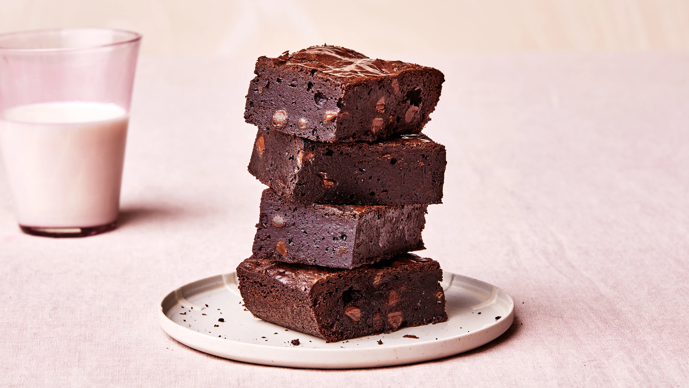

Brownie Recipe

Ingredients:
- 1 cup (225g) unsalted butter
- 2 cups (400g) granulated sugar
- 4 large eggs
- 1 teaspoon vanilla extract
- 1 cup (125g) all-purpose flour
- 1/2 cup (60g) cocoa powder
- 1/4 teaspoon salt
- 1 cup (150g) chopped nuts (optional)
Instructions:
- Preheat your oven to 350°F (175°C) and grease a 9x13-inch baking pan.
- In a microwave-safe bowl, melt the butter.
- In a large mixing bowl, combine the melted butter and granulated sugar. Mix well.
- Add the eggs one at a time, mixing well after each addition. Then, stir in the vanilla extract.
- In a separate bowl, whisk together the all-purpose flour, cocoa powder, and salt.
- Add the dry ingredients to the wet ingredients and mix until just combined.
- If desired, fold in the chopped nuts.
- Pour the batter into the greased baking pan and spread it evenly.
- Bake for 25-30 minutes, or until a toothpick inserted into the center comes out with a few moist crumbs.
- Remove from the oven and let the brownies cool in the pan before cutting into squares.
Return to Homepage